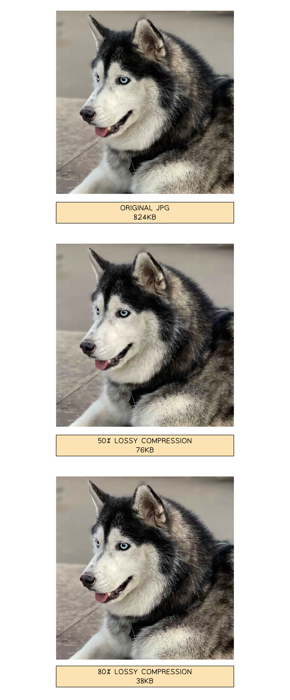
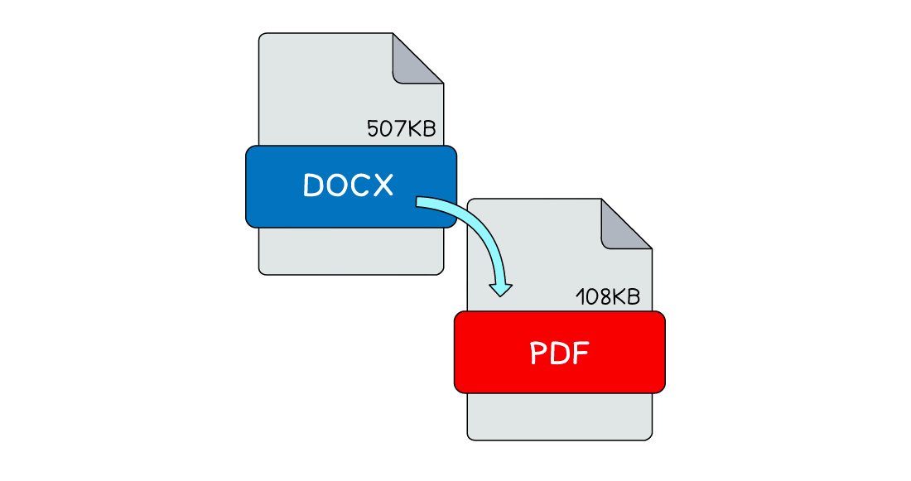

Units of Data Storage
What are units of data storage?
- A unit of data is a term given to describe different amounts of binary digits stored on a digital device
- These are the units you need to know for IGCSE:
| Unit | Symbol | Value |
|---|---|---|
| Bit | b | 1 or 0 |
| Nibble | 4 b | |
| Byte | B | 8 b |
| Kibibyte | KiB | 1,024 B (210) |
| Mebibyte | MiB | 1,024 KiB (220) |
| Gibibyte | GiB | 1.024 MiB (230) |
| Tebibyte | TiB | 1,024 GiB (240) |
| Pebibyte | PiB | 1,024 TiB (250) |
| Exbibyte | EiB | 1,024 PiB (260) |
Megabyte vs Mebibyte
- 1 kibibyte (1KiB) = 1024 bytes (1024 B) - binary prefixes (to the power of 2)
- 1 kilobyte (1KB) = 1000 bytes (1000 B) - decimal prefixes (to the power of 10)
Converting between units
- It is often a requirement of the exam to be able to convert between different units of data, for example bytes to mebibytes (larger) or kibibytes to bytes (smaller)
- This process involves division, moving up in size of unit and multiplication, moving down in size of unit
- When dealing with all units bigger than a byte we use multiples of 1024 (2 10)
- For example, 2000 kibibytes in mebibytes would be 2000 / 1024 = 1.95 MiB and 2 tebibytes in gibibytes would be 2 * 1024 = 2048 GiB
- When dealing with bits and bytes the same process is used with the value 8 as there are 8 bits in a byte
- For example, 24 bits in bytes would be 24 / 8 = 3 B and 10 bytes in bits would be 10 * 8 = 80 b
- The same multiply or divide by 1024 rule applies when converting beyond TiB to PiB and EiB
| Unit | ||
|---|---|---|
| Multiply by 8 ⇑ | Bit | Divide by 8 ⇓ |
| Byte | ||
| Multiply by 1024 ⇑ | Kibibyte | Divide by 1024 ⇓ |
| Mebibyte | ||
| Gibibyte | ||
| Tebibyte | ||
| Pebibyte | ||
| Exbibyte |
Convert 1 PiB to GiB [2]
Answer So:
- 1 PiB = 1024 × 1024 GiB [1 mark]
- 1 PiB = 1,048,576 GiB [1 mark]
Calculating File Sizes
How do you calculate the size of a bitmap image?
- Calculating the size of a bitmap image can be carried out with either of the following formulas:
- Resolution x colour depth
- Image width x image height x colour depth
Example
Image Files
(Resolution) x (Colour Depth)
| Size of bitmap image = | ||
|---|---|---|
| Resolution | 250,000 | Resolution = width x height |
| Colour Depth | 24 bits (3 bytes) | 24 bits = 3 bytes |
| 250,000 x 24 | = (bit to bytes) /8 (bytes to KiB) /1024 |
6,000,000 bits 750,000 bytes 732 KiB |
| 250000 x 3 | = (bytes to KiB) /1024 | 750,000 bytes 732 KiB |
OR
Image Files
(Image width) x (Image height) x (Colour Depth)
| Size of bitmap image = | ||
|---|---|---|
| Image width | 500 | |
| Image height | 500 | |
| Colour Depth | 24 bits | 24 bits = 3 bytes |
| (500 x 500 x 24) | = (bit to bytes) /8 (bytes to KiB) /1024 |
6,000,000 bits 750,000 bytes 732 KiB |
| (500 x 500 x 3) | = (bytes to KiB) /1024 |
750,000 bytes 732 KiB |
How do you calculate the size of a sound file?
- Calculating the size of a sound file is carried out with the following formula:
- Sample rate x duration x sample resolution
Example
Sound Files
(Sample Rate) x (Duration in seconds) x (Sample Resolution)
| Size of sound file = | ||
| Sample rate | 100 | Samples per second |
| Duration | 60 | Seconds |
| Sample resolution | 24 | Number of bits stored per sample |
| 100 x 60 x 24 | = (bit to bytes) /8 (bytes to KiB) /1024 |
144,000 bits 18,000 bytes 18 KiB |
Compression
The Need For Compression
What is compression?
- Compression is reducing the size of a file so that it takes up less space on secondary storage
- The impact of compression is:
- Less storage space required
- Less bandwidth required
- Shorter transmission time
- Compression can be achieved using two methods, lossy and lossless
Lossy Compression
What is lossy compression?
- Lossy compression is when data is lost in order to reduce the size on secondary storage
- Lossy compression is irreversible
- Lossy can greatly reduce the size of a file but at the expense of losing quality
- Lossy is only suitable for data where reducing quality is acceptable, for example images, video and sound
- In photographs, lossy compression will try to group similar colours together, reducing the amount of colours in the image without compromising the overall quality of the image

- In the images above, lossy compression is applied to a photograph and dramatically reduces the file size
- Data has been removed and the overall quality has been reduced, however it is acceptable as it is difficult to visually see a difference
- Lossy compressed photographs take up less storage space which means you can store more and they are quicker to share across a network
Lossless Compression
What is lossless compression?
- Lossless compression is when data is encoded in order to reduce the size on secondary storage
- Lossless compression is reversible, the file can be returned to its original state
- Lossless can reduce the size of a file but not as dramatically as lossy
- Lossless can be used on all data but is more suitable for data where a loss in quality is unacceptable, for example documents
- In a document, lossless compression algorithms such as run length encoding (RLE) can be used to analyse the contents looking for patterns and repetition.
What is run length encoding?
- Run length encoding (RLE) is a form of lossless data compression that condenses identical elements into a single value with a count
- For a text file, " AAAABBBCCDAA " is compressed to " 4A3B2C1D2A "
- The string has four 'A’s, followed by three 'B’s, two 'C’s, one ‘D’, and two 'A’s
- RLE is used in bitmap images to compress sequences of the same colour
- For example, a line in an image with 5 red pixels followed by 3 blue pixels could be represented as " 5R3B "
Lossless file formats

- In the image above, lossless compression is automatically applied to document formats such as DOCX and PDF with a different rate of success
- When you open a lossless compressed document the decompression process reverses the algorithms and returns the data back to its original state
- Lossless compressed documents take up less storage space which means you can store more and they are quicker to share across a network
An email is sent containing a sound file.
Lossy compression is used to compress the sound file.
Explain two reasons why using lossy compression is beneficial. [4]
How to answer this question
- What are the differences between lossy and lossless?
- Can you state two differences? [2 marks]
- Can you say why each point is a benefit? [2 marks]
Answer
- Lossy will decrease the file size [1]
- **…**so it can sent via email quicker [1]
- Lossy means data is lost [1]
- **…**the difference is unlikely to be noticed by humans [1]